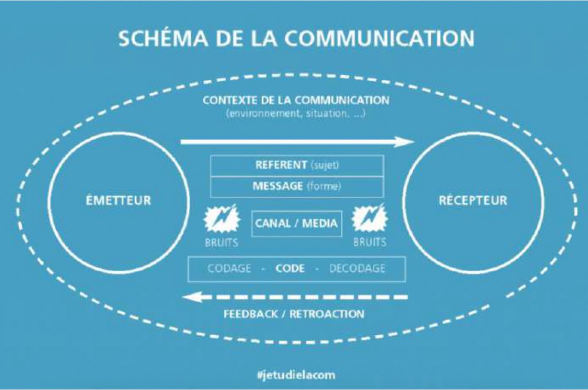

L'UE13 continue à travailler et développer des compétences en lien avec les notions d'information et de communication (orale comme écrite).
Les grandes parties du programme restent donc inchangées, même si certaines d'entre elles ont été allégées et d'autres, enrichies.
Le point principal concerné est celui des différents écrits professionnels. Le programme a été resserré autour de ceux en lien direct avec la soutenance du rapport et l'objectif d'insertion professionnelle : rapport de stage, CV et lettre de motivation.
Le programme n'inclut donc plus les notions de procès-verbal, de compte rendu, de note de synthèse.
L'acquisition des compétences de recherche d'information et de communication peut se réaliser à travers différentes activités mises en œuvre en séances de communication professionnelle mais aussi dans le cadre des modules.
Il s'agit de favoriser le travail en autonomie mais aussi le travail collaboratif entre étudiants.
| Type d'ressource | Lien / Description |
|---|---|
| Activités collaboratives et connaissance de soi | https://www.minus-editions.fr/ |
| Outils collaboratifs | https://outilscollaboratifs.com/ |
| EDUBASE | edubase.eduscol.education.fr |
| Portail documentaire CDI | Activités en co-animation avec les professeurs documentalistes |
| Détection et comparaison IA | https://www.aiornot.com/, https://comparia.beta.gouv.fr/ |
| Régulation communication et audiovisuel | https://www.arcom.fr/ |
| Générateurs de biblio/sitographie | Zoterobib (https://zbib.org/), https://www.scribbr.fr/ |
Une situation de communication professionnelle est un moment d’échange (oral, écrit ou numérique) entre des acteurs du monde du travail, visant à accomplir une tâche, coordonner une action, informer ou prendre une décision.
Le candidat privilégiera l’exploitation d’une situation de communication à laquelle il a participé ou à laquelle il a assisté au cours de son stage. De manière marginale, le candidat peut s’appuyer sur une expérience personnelle, par exemple un engagement associatif. En revanche un travail réalisé dans le cadre d’activités réalisées en classe ne peut servir de base à l’épreuve de l’UE 13.

Remarque préalable : l’exemple ci-dessous illustre la notion de situation de communication professionnelle, cependant elle ne représente pas un modèle à suivre strictement.
Dans le cadre de ma préparation au DCG, j’ai effectué un stage de quatre semaines au sein du cabinet Expertplus. Ce cabinet situé à Caen comprend deux experts-comptables associés, 15 collaborateurs comptables et une personne chargée de l’accueil.
Au cours du stage, j’ai saisi des écritures comptables dans la comptabilité de M. Bertrand gérant d’une boulangerie-pâtisserie à Caen, client du cabinet. Ce dossier est suivi par M. Daniel, collaborateur, titulaire d’un DCG, il est présent au cabinet depuis une dizaine d’années.
M. Daniel a proposé à M. Bernard un rendez-vous au cabinet afin de faire le point sur la situation de la boulangerie-pâtisserie. C’est donc avec un grand intérêt que j’ai pu assister à ce rendez-vous.
a. Phase préparatoire à la situation de communication
M. Bertrand, propriétaire et gérant d’une boulangerie-pâtisserie à Caen est client du cabinet Expertplus, il a
reçu les documents de synthèse annuels. Un rendez-vous en présentiel est pris avec M. Daniel, son conseiller,
afin de bénéficier d’une présentation orale de ses comptes.
b. Résumé de la situation
M. Daniel, collaborateur du cabinet Expertplus reçoit son client, M. Bertrand, propriétaire et gérant d’une
boulangerie-pâtisserie à Caen. L’objet du rendez-vous est de consolider la relation avec le client, la
présentation des documents de synthèse au client mais aussi de lui proposer une prestation spécifique : une
analyse des coûts et des marges.
c. Types de communication
| Composantes du schéma de communication | Application à la situation de communication |
|---|---|
| Emetteur | M. Daniel, collaborateur (présentation des comptes) |
| Récepteur | M. Bertrand, gérant de la boulangerie |
| Référent | Présentation des comptes et analyse de la situation comptable et financière de la boulangerie. Proposition d’une prestation de service |
| Message | Présentation orale avec un support visuel |
| Canal/Media | Communication en face à face |
| Code | Langue française, vocabulaire comptable |
| Feedback/rétroaction | Questions/ réponses de la part de l’émetteur et du récepteur |
a. Résumé des échanges
M. Daniel a présenté les documents de synthèse, il a insisté sur les points suivants :
M. Daniel a dû faire preuve de pédagogie pour expliquer ces différentes situations de gestion.
M. Bertrand a posé de multiples questions afin de comprendre la baisse du résultat. Celles-ci ont permis au collaborateur de préciser ou de reformuler le contenu de ses explications.
M. Bertrand a exprimé un besoin de réfléchir quant à l’opportunité de souscrire à la prestation d’analyse des coûts et des marges.
b. Bruits : Ce sont tous les éléments qui perturbent la communication. Nous pouvons identifier plusieurs origines des bruits :
Lors du rendez-vous, nous avons pu identifier deux bruits d’origine différente :
Les objectifs de cette communication étaient de consolider la relation avec le client, d’informer et d’influencer.
Le rendez-vous de présentation des comptes est un temps fort de la relation du collaborateur avec son client, il favorise l’interactivité et apporte une dimension humaine aux échanges et complète des échanges téléphoniques et par courriels.
Le rendez-vous avait pour objectif d’informer et expliquer les comptes de l’entreprise, l’objectif semble avoir été atteint.
Le collaborateur avait aussi pour objectif de vendre une prestation de gestion (analyse des coûts et marges) mais le client désire bénéficier d’un peu de temps avant de se décider.
Remarque préalable : l’exemple ci-dessous illustre la notion de situation de communication professionnelle, cependant elle ne représente pas un modèle à suivre strictement.
Dans le cadre de ma préparation au DCG, j’ai effectué un stage de quatre semaines au sein du service comptable de l’entreprise « LA LAITERIE DU BOCAGE » située à Vire (Calvados). Au cours de mon stage j’ai assisté à une réunion des membres du service comptable dont l’ordre du jour était le projet de mise en œuvre d’un nouveau logiciel comptable.
LA LAITERIE DU BOCAGE, entreprise familiale, a pour activité la collecte et la transformation du lait afin de fabriquer et commercialiser des produits laitiers tels que yaourts, crèmes desserts et beurre. Elle compte 80 salariés. L’entreprise est dirigée par M. Lefranc.
Le service comptable comprend quatre personnes :
a. Phase préparatoire à la situation de communication
M. Lopez est titulaire du DSCG, après de multiples postes en cabinet d’expertise-comptable, il a intégré la
laiterie du bocage en tant que responsable du service en juin 2015. M. Lopez est en réflexion depuis plusieurs
mois sur l’évolution du logiciel de comptabilité utilisé dans son service.
M. Lopez mène une veille règlementaire et technologique dans les domaines qui concernent son activité professionnelle. Il s’informe, notamment sur l’application de la facture électronique, applicable à partir du 1er septembre 2026.
M. Lopez pense que cette nouvelle obligation règlementaire est l'occasion de changer de logiciel comptable, celui utilisé actuellement ne donne pas entièrement satisfaction. Après avoir échangé avec le directeur M. Lefranc, M. Lopez a étudié différentes offres sur le marché et a sélectionné un nouveau logiciel qu'il souhaite mettre en œuvre le 1er janvier 2026.
b. Résumé de la situation
M. Lopez réunit en salle de réunion les membres de son équipe : M. Tati, Mme Abline, Mme Leroy afin de présenter
le changement de logiciel et sa mise en œuvre. Il est accompagné de M. Azevedo, agent commercial de l'éditeur
COMPTALOG.
L'objet de la réunion est :
c. Types de communication
| Composantes du schéma de communication | Application à la situation de communication |
|---|---|
| Emetteurs | M. Lopez, chef du service comptable présente le projet de changement de logiciel et répond aux questions des membres de son service. M. Azevedo, agent commercial de l'éditeur COMPTALOG présente les fonctionnalités du logiciel et répond aux questions |
| Récepteurs | Les membres du service comptable écoutent les présentations de M. Lopez et de M. Azevedo. Il s'agit de : M. Tati, Mme Abline, Mme Leroy, Stagiaire DCG |
| Référent | La communication porte sur le projet de mise en œuvre d'un nouveau logiciel comptable |
| Message | Présentation orale avec un support visuel afin de proposer aux membres du service comptable un premier aperçu des fonctionnalités du nouveau logiciel comptable |
| Canal/Media | Communication en face à face |
| Code | Langue française, vocabulaire comptable |
| Feedback/rétroaction | Questions/ réponses de la part de l'émetteur et du récepteur |
a. Résumé des échanges
De multiples questions de Mme Abline, Mme Leroy et M. Tati ont porté sur plusieurs points :
b. Bruits : Ce sont tous les éléments qui perturbent la communication. Nous pouvons identifier plusieurs origines des bruits :
Lors de la réunion, différents types de bruits ont pu être identifiés :
L'objectif de la réunion du service comptable était de présenter aux membres du service le projet de mise en œuvre d'un nouveau logiciel comptable. M. Lopez, chef du service a animé cette réunion, accompagné de M. Azevedo, agent commercial de l'éditeur COMPTALOG.
La réunion a permis d'informer les membres du service comptable du projet. Cependant cette réunion a suscité des réactions diverses de la part des membres du service. Ces derniers ont montré leur étonnement par la communication verbale et parfois non verbale (soupirs par exemple) face à ce projet.
De plus, la démonstration de M. Azevedo n'a pas convaincu les membres du service sur la performance du nouveau logiciel.
Nous pouvons donc dire que si cette réunion a permis l'information des membres du service comptable, elle a aussi généré des inquiétudes parmi le personnel du service.
Pendant mon stage, j’ai eu l’opportunité de participer à un événement organisé par le cabinet ABC pour ses clients et visant à leur proposer une prestation de Comité Social et Économique externalisé. Il m’a ainsi semblé intéressant de décrire cette situation riche qui impliquait une communication en amont sous forme d’un mailing, la préparation d’un événement physique ainsi qu’une forte communication en aval de nature téléphonique, et mobilisant de nombreux acteurs.
Les cabinets d’expertise comptable font désormais face à une concurrence accrue et doivent se différencier et proposer des services à forte valeur ajoutée afin de fidéliser leur clientèle et attirer de nouveaux clients. Toutefois, ils ne disposent pas toujours des compétences adaptées en interne, ce qui les pousse à se tourner vers des partenaires aptes à proposer des prestations qualitatives.
Le Cabinet ABC, qui fait partie des 10 plus grands réseaux mondiaux d’expertise comptable et d’audit, est proactif dans cette démarche et cherche à développer de multiples services visant à mieux répondre aux besoins des entreprises qu’il accompagne. Au-delà des missions d’expertise et d’audit, il facture également des missions de conseil stratégique, digital, RSE, d’accompagnement à la création et à la reprise d’entreprise ou à l’international. Depuis maintenant quelques années, il accélère dans les missions de conseil en RH et propose notamment à des TPE et PME un service de CSE externalisé, proposé par l’entreprise Happywoork.
Un CSE externalisé est une solution permettant à une entreprise de déléguer les missions et les responsabilités d’un Comité Social et Économique à un acteur extérieur. Autrement dit, l’entreprise propose des avantages sociaux comparables à ceux d’une grande entreprise, sans toutefois en assumer la gestion. L’objectif affiché pour nos clients est d’aider à fidéliser leurs collaborateurs, à favoriser leur engagement et à améliorer l’attractivité.
La société Happywoork propose ses services en direct et également à travers un réseau de prescripteurs dont fait partie ABC. Sur l’antenne de Poitiers, le cabinet ABC compte 26 collaborateurs. Le Directeur, Pascal Martin, s’inscrit dans la politique du groupe de proposer cette prestation afin de développer le chiffre d’affaires du cabinet. La situation ici décrite est donc une situation de communication commerciale qui mobilise différents acteurs.
La communication sur ce service s’étend en réalité sur plusieurs mois, entre la première communication et le bilan de l’opération, qui a permis d’évaluer l’efficacité de la communication. Elle présente l’intérêt de présenter des allers-retours entre les différents acteurs.
| Type d’acteur | Fonction |
|---|---|
| Le service communication | Situé dans les bureaux de Nantes, il élabore la newsletter régionale disponible à la fois en format papier mais également en format e-mag sur la plateforme client ABC. Leur but est de transmettre une information fiable et vérifiée, et de valoriser toutes les actions du groupe, notamment commerciale. |
| Le directeur du cabinet | Il est chargé d'appliquer la politique commerciale du groupe sur son territoire, son rôle relève du management d'équipe, et fixe des objectifs (notamment commerciaux) aux experts-comptables. |
| Les experts-comptables / Les collaborateurs | Au nombre de 7, 4 experts-comptables et 3 mémorialistes, ils ont chacun un portefeuille de clients en gestion et sont donc les mieux placés pour proposer l'offre à leurs clients. C'est au final Emmanuelle C. qui a chapeauté l'ensemble de la mission. Les collaborateurs accompagnent les experts dans la diffusion d'une information complète et de qualité à la clientèle. |
| Le prestataire Happywoork | Il valorise la prestation de service par sa maîtrise de l'offre ; il répond aux questions posées par les clients par l'intermédiaire du cabinet. Il assure ensuite la prestation une fois le contrat signé. |
| Moi (stagiaire DCG) | Dans cette situation, j’ai eu un rôle d’observation, j’ai également participé à l’organisation de la soirée de présentation par le prestataire. |
La communication repose ici sur différentes étapes visant à promouvoir l’offre de CSE externalisé auprès des TPE et PME clientes du cabinet. Le cabinet souhaite aussi en profiter pour présenter les autres missions RH proposées par une des filiales du groupe : ABCPeople.
4.1. Communication préalable : la Newsletter ABCpulse et ses limites
Le service communication régional du groupe propose à la fois un e-mag destiné à partager l'actualité du groupe,
mais également une newsletter envoyée par courriel et qui est destinée à diffuser des informations légales,
pratiques ou destinées à une amorce commerciale, souvent sous forme de brève avec des liens cliquables
permettant d'aller plus loin.
La communication sur le CSE externalisé est parue dans la newsletter du 11 mars. La newsletter est envoyée le matin pour optimiser le taux d'ouverture des mails. Il s’agit d’une communication de masse.
Analyse : Je n’ai pas pu avoir accès au taux d’ouverture du mailing, mais d’après Emmanuelle C., expert-comptable, d’une part beaucoup de clients n’ouvrent même pas les courriels, d’autre part quand on leur demande s’ils ont vu passer l’information, ils répondent par la négative. D’autres lui ont avoué s’être désinscrit de la newsletter.
Ainsi on voit ici apparaître deux types de bruits dans la communication :
Par ailleurs, la newsletter s’adresse à tous les clients et donc pour une communication spécifique, elle ne semble pas être un bon médium.
4.2. La phase de mailing : l’intérêt d’une communication ciblée
Monsieur Martin, directeur du cabinet a ensuite répondu à une sollicitation de Happywoork qui souhaitait
valoriser sa prestation de service auprès de la clientèle du cabinet. La date du 19 juin a alors été retenue,
après la période fiscale, afin que les collaborateurs soient plus disponibles et en fin de matinée.
Il a été décidé d’organiser l’évènement dans l’une des grandes salles de réunion du cabinet équipée d’un écran de projection. D’autres réunions se déroulent dans le complexe de loisirs et sportifs situé à 500m du cabinet, adapté à la relation client pour son caractère festif et sportif.
Mailing initial : Un mailing a alors été préparé par Emmanuelle C., ma tutrice et l’un des experts-comptables à laquelle le directeur a délégué la mission, et qui entretient de très bons rapports avec le prestataire. Emmanuelle m’a demandé de rédiger un courriel, et pour cette tâche j’ai eu l’autorisation d’utiliser l’intelligence artificielle. Elle a ensuite apporté quelques corrections.
| Atouts de l'email | Axes d'amélioration |
|---|---|
| Incitation à l'action (phrase d'accroche), Présentation du programme, Informations pratiques et possibilité de s'inscrire | Personnalisation : Emmanuelle a souhaité personnaliser le courriel avec le nom du
client. Inscription : pour fluidifier la gestion des inscriptions, il a été décidé de s'inscrire uniquement par le lien d'inscription. |
Nous avons estimé qu’il n’était pas utile de rentrer dans le détail des avantages qui seraient développés lors de la présentation. 15 personnes ont alors répondu favorablement dans un intervalle de deux semaines.
Relance : Chaque expert a alors procédé à une phase de relance en s’appuyant le cas échéant sur les collaborateurs. Deux pratiques ont alors été observées, en fonction des personnalités de chacun :
| Relance par mail | Relance par téléphone |
|---|---|
| Un courriel personnalisé était rédigé par chaque collaborateur en s'appuyant sur l'outil d'IA présent dans la messagerie d'ABC, et permettant de personnaliser le message en fonction de son degré de proximité avec le client. | Certains collaborateurs préfèrent largement convaincre leur client par téléphone. L'argumentation s'en trouve en effet améliorée, mais cela suppose de bien connaître le service. |
Il m’a été difficile de suivre les clients qui avaient été relancés par mail ou par téléphone. Le téléphone semble avoir été beaucoup plus efficace. Au final, nous avons eu 28 personnes qui ont confirmé leur présence.
4.3. L’organisation : de la préparation à l’évènement
Pour l’organisation de l’évènement, c’est Najwa B. qui a été mobilisée car la mission l’intéressait. Elle a été
préparée en collaboration avec Simon L., responsable de développement commercial chez Happywoork, et un salarié
du groupe ABC issu de la filiale chargée du développement des missions RH.
Avant la réunion : Najwa a été en charge de la préparation matérielle de l’évènement, je l’ai aidée dans ses missions :
Pendant l’évènement (communication de groupe) : La présentation a été co-animée par Simon L. et Emmanuelle, et un second expert-comptable, Billal. Déroulé :
Analyse : J’ai été ravi d’assister à cette présentation qui m’a permis de voir la mise en œuvre de l’argumentation commerciale et de mieux comprendre les enjeux d’un CSE externalisé. Simon a insisté sur trois points essentiels :
J’ai pu constater que certains clients n’osaient pas poser de question. Un bruit psychologique a pu apparaître lié à la complexité technique de certains aspects de la présentation. En revanche, lors du cocktail, les échanges se sont faits plus informels (communication interpersonnelle). Freins dans la réalisation de l’objectif : le prix ! Mais aussi la crainte que les salariés n’adhèrent pas, et la question de la responsabilité en cas de problème. Les temps d’échange informels ont clairement permis de lever ces freins chez certains clients.
4.4. La relance téléphonique
Suite à la présentation, certains experts et collaborateurs ont réalisé une relance téléphonique (appel sortant)
et refixé des rendez-vous avec les clients. Cette phase a été cruciale pour évaluer le succès de la soirée et
également atteindre les objectifs du cabinet.
| Clients invités | Clients inscrits (relance tél.) | Clients présents | Taux de présence | Clients souscrivant offre Happywork | Autres prestations RH facturées | Taux de transformation CSE |
|---|---|---|---|---|---|---|
| ? | 28 | 26 | 93% | 5 | 8 | 19.2% |
Le cabinet semble satisfait de ces résultats. D’un point de vue qualitatif, les clients ont fait des retours très positifs sur la soirée et ont trouvé la présentation intéressante. D’un point de vue quantitatif, le cabinet a atteint ses objectifs.
Axes d’amélioration : mise en place d’une relance supplémentaire, convier un client pour un retour d’expérience.
Le cabinet Copilot’Gestion est un cabinet d’envergure régionale basé à Poitiers et qui se présente comme un facilitateur pour les entreprises, avec comme cœur de métier la comptabilité, la gestion, et le pilotage de l’entreprise mais il décline également ses activités dans des domaines connexes, avec 3 autres activités :
Il dispose de plusieurs bureaux (Poitiers, Chauvigny, Niort, Angoulême, Ruffec) et emploie 80 collaborateurs. Le cabinet emploie notamment 8 experts-comptables, une directrice des ressources humaines et un responsable communications chargé de la communication sur les 3 réseaux sociaux investis : Facebook, LinkedIn et YouTube.
| Réseau social & popularité | Avantages | Inconvénients | Décision |
|---|---|---|---|
| LinkedIn (1608 abonnés) | Réseau social professionnel de référence. Renforce l'image d'expertise et la crédibilité. Amène de nouveaux clients (leads). | Nécessite un rythme soutenu. Nécessite de vérifier la fiabilité des informations techniques. | Présent |
| Facebook (258 followers) | Utilisé par les artisans, commerçants et TPE. Adapté pour visibilité locale et proximité. | Réseau vieillissant, peu de portée sans budget, image moins professionnelle. | Présent |
| Youtube (529 abonnés) | Parfait pour vidéos explicatives et techniques (vulgarisation). Renforce la crédibilité. | Importance des ressources nécessaires en temps et financières. | Abandonné |
| Instagram (168 abonnés) | Réseau populaire et en croissance. Valorisation par l'image. Intéressant pour le recrutement. | Peu adapté aux contenus techniques. | En test (RH) |
| Tiktok (/) | Forte visibilité potentielle grâce à l'algorithme. | Très orienté divertissement, risque de dégradation d'image. | Absent |
Le responsable planifie ses publications pour être visible dès 8h, les mardi et jeudi étant privilégiés. Les publications vont des vœux de bonne année, aux flashs infos (malus auto, IR, titres restaurants, congés payés), en passant par les annonces de recrutement et la vie du cabinet (team building, nouveaux collaborateurs).
Recommandations : développer les contenus RH, travailler la forme des posts pour inciter à l'action, inciter les collaborateurs à interagir, et conserver les posts techniques pour asseoir le sérieux du cabinet.